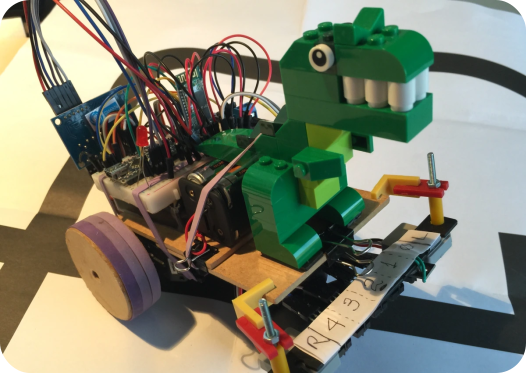
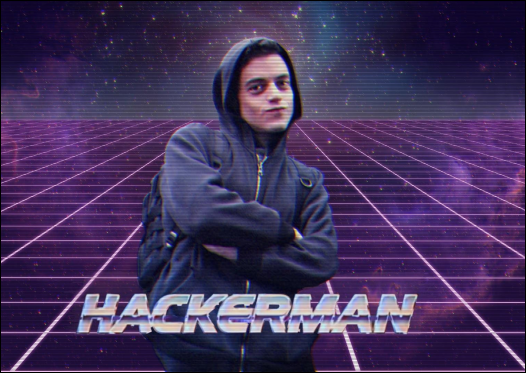

Ideias
Qualquer ideia é bem-vinda, delas podemos treinar o que estudamos na sala de aula ou naquele cursinho pago da udemy, o networking está muito aquecido nesse meio já que para ter um grande conhecimento devemos compartilhar ou até mesmo ensinar, se você ensina para alguém um assunto significa que você o domina bem.
Hardware é daora
Não sei você, mas sempre que eu vejo algo sobre robotica penso naqueles campeonatos de luta de robos, você simplesmente criar seu robo com papelão e garrafa pet e colocar para brigar com outro robo feito dos mais aleatorios materiais e componentes, o legal de juntar uma boa quantidade de pessoas com interesses desse genero é que podemos criar o nosso proprio c ampeonato amador, ok que o intuito é ver dois robos brigando, mas a trejetoria para construir o robo é necessario estudar uma linguagem de programação, saber sobre os componentes eletronicos que vamos usar e até mesmo saber lidar com trabalho em equipe, então é um grande sonho criar algo do genero com pessoas diversas de cursos diferentes e etc
Ser hacker não é só assistir Mr Robot
Muitos alunos querem seguir na area de segurança mas infelizmente n sabem por onde começar, uns começam apenas usando programas já automatizados 100% mas não sabe o que rola por trás dele, uma base boa de redes de computadores, saber o que cada processo faz independente da area de segurança que você quer seguir vai te dar vantagem para saber lidar com certos problemas, então a ideia de criar novas amizades com os mesmos interesses pode te ajudar a ter uma noção por onde começar a estudar sobre, campeonatos de CTF amadores feitos por nós ou até mesmo quem tem a pontuação mais no hackflag já é um inicio para começar a ter aquela competitividade amigavel e satisfatoria.
Programar faz bem
Criar ferramentas ou até mesmo sites é uma incrível forma de colocar o aprendizado em dia, somos programadores e ter ao menos 1 linguagem de programação sendo o nosso segundo idioma, por assim dizer, é mais que necessário. Se unir com alunos de outros cursos é bom, porque podemos ter uma demanda, podemos resolver o problema deles simplesmente programando algo hehe.